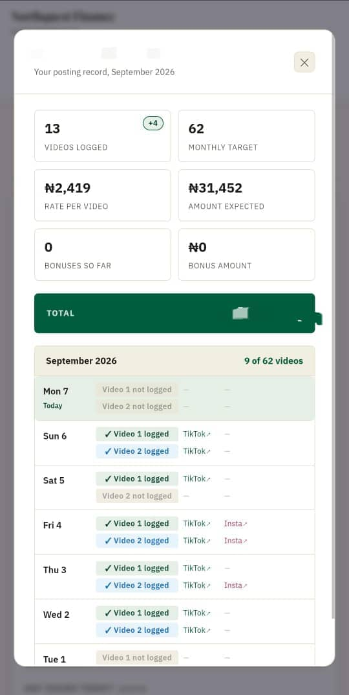
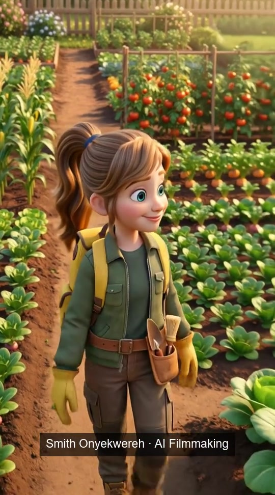
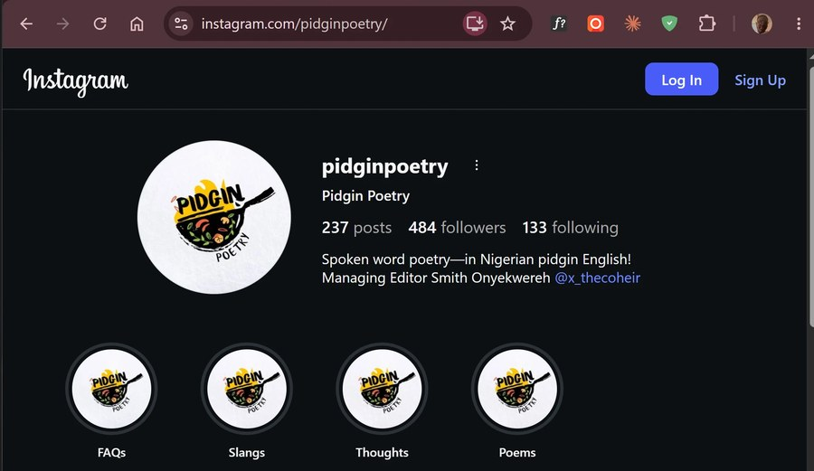
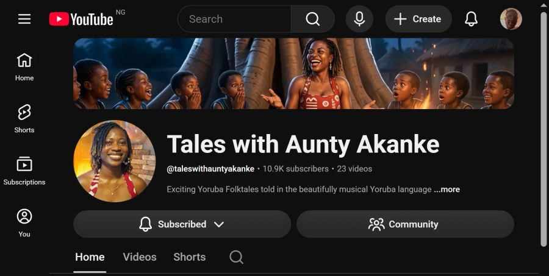
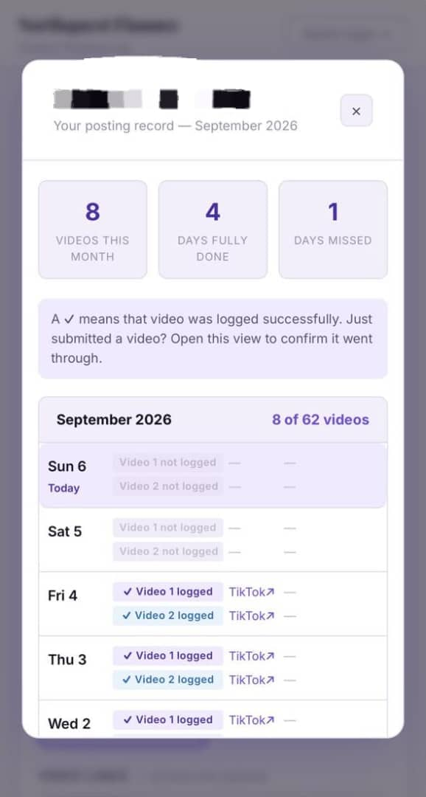

Soil Edu — Trailer
Original concept to final cut
Smith OnyekwerehOperations & Administrative Manager
& administrative support.

Systems I've built
Stories I've made Research & editorialI manage programmes, build practical systems, and keep the work moving.
People, posting logs, contracts and reconciliation.
Built around the work I actually manage.
See the amount change on the same record.
Ready to try. Nothing will be sent or saved.
Operations design, implementation and ongoing management.
A platform for marketing organisations: people, business-specific workflows, contracts and payments in one place.
See what I'm buildingConcept preview, not a live management dashboard.
Research assistance for a PhD researcher. Intellectual property, source mapping and organised outreach—not a university appointment.
Open the research notesA view of my research process
Managing Editor, Pidgin Poetry. Editorial planning, community correspondence and the platform's first open poetry contest.
150+ posts, with a consistent editorial rhythm.
Visit Pidgin Poetry
Original films and commissioned stories,
brought to life with AI.
Original concept to final cut
Soil Edu · AI film
Soil Edu · AI film
My role on Soil Edu: concept, characters, script, AI generation, direction, editing and sound. All previews are watermarked.

She supplied and narrated the stories. I brought them to screen through AI production, editing and sound.
382K views on the highest-performing video. The channel grew from 108 to 10,000+ subscribers in under nine months.
Production credits & historical resultsI'm Smith Onyekwereh, an Operations and Administrative Manager and virtual administrative assistant. I work across operations, research and creative production—with AI as part of the toolkit.
Legal training informs how I research and document work. My experience also includes legal externship work and co-founding JusticeConnect Nigeria—an unfinished project, paused because of Nigerian Law School commitments.
NorthQuest Finance + CashDrive. One operations case study, built around the same system and adapted across two businesses.
Creator records, posting activity and payment reconciliation were scattered across manual processes. Reviewing a month could take weeks.

User-supplied historical screenshots, not live data. Captured states may show different totals; they are not the calculation source for the fictional demo.
100+ creators across the programme. Monthly reconciliation reduced from weeks to about an hour—a result from my operational experience, not an independently audited benchmark.
My role: Operations and Administrative Manager, reporting to Head of Products, NorthQuest Finance.
Try the connected demoThe next step beyond the posting logs: a connected platform for managing multiple businesses.
One person can work across brands, while each brand still needs its own creators, review queues, contracts and payment records. CashDrive also needs its own inquiry workflow.
I translate that work into product requirements, business rules, connected flows and tested prototypes, using AI-assisted implementation.
The portfolio demonstrates the intended organisation using fictional examples. It is not connected to a production database and does not prove live contract storage, notifications, payments or third-party integrations.
Return to the workspace previewResearch assistance for a PhD researcher—not employment by the university.
I supported intellectual-property research, including copyright, trademarks and collective management organisations, alongside structured outreach mapping.
Private research documents and contact lists are not reproduced here. The homepage process sheet is an illustration, not a client deliverable.
Contact me about research supportDifferent projects. Different starting points. Hands-on production throughout.
For EMMA, TIMI and the trailer, I developed the idea, characters and script, directed the work, generated the AI material, and completed editing and sound.
The client supplied and narrated the story. My contribution was the AI production and post-production around it, including editing, sound and Yoruba–English transcription and translation.
My historical portfolio records nine AI-animated segments and 382,000 views on the highest-performing video. The channel grew from 108 to 10,000+ subscribers in under nine months. Those are historical channel results, not a claim that I created every video on the channel or caused all growth alone.
The portfolio uses compressed, permanently watermarked viewing copies. Original exports remain untouched. A watermark supports attribution but cannot prevent copying.
Watch the filmsThis is a local review copy. Business demos are fictional. No real records change.
Inline updates; native video controls. Keyboard supported. No haptics or backend. Approval here does not publish anything.